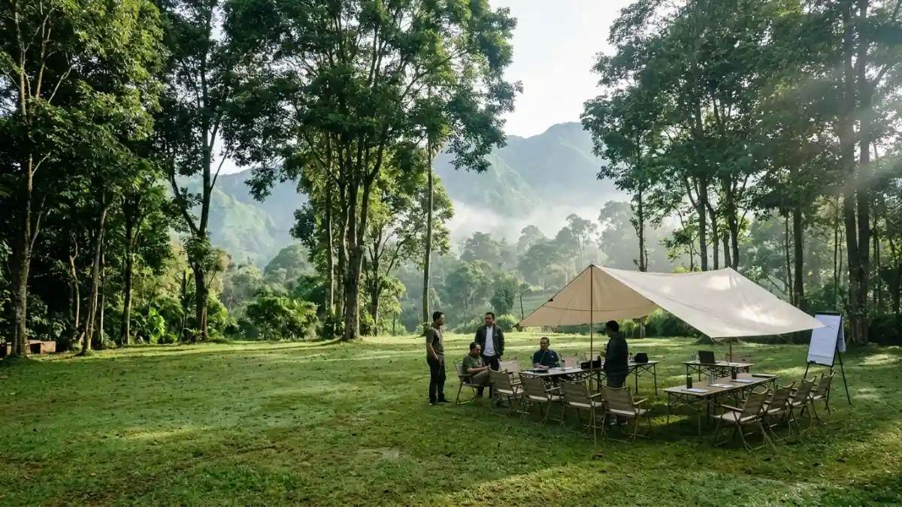
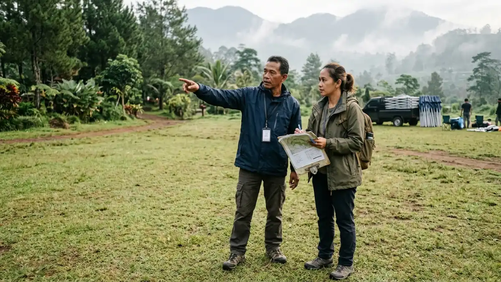

Area camping ground yang luas dan asri menjadi lokasi ideal untuk menyelenggarakan meeting outdoor tim kerja.Lokasi meeting outdoor yang tepat memiliki akses mudah, area teduh, fasilitas dasar lengkap, tingkat kebisingan rendah, dan kapasitas yang sesuai jumlah peserta.
- Pilih lokasi meeting outdoor berdasarkan akses, fasilitas, kapasitas, keteduhan, dan ketenangan.
- Area camping ground cocok untuk rapat yang digabung dengan menginap atau team building.
- Survei langsung ke lokasi lebih andal dibanding hanya melihat foto.
- Biaya lokasi dapat bervariasi tergantung durasi, fasilitas, dan jumlah peserta.
- Bagaimana Cara Memilih Lokasi Meeting Outdoor?
- Mengapa Area Camping Ground Cocok untuk Meeting Outdoor?
- Fasilitas Apa yang Harus Tersedia di Lokasi Meeting Outdoor?
- Seberapa Penting Tingkat Kebisingan dan Kondisi Sekitar Lokasi?
- Apa yang Memengaruhi Biaya Lokasi Meeting Outdoor?
- Apa Kesalahan Umum dalam Memilih Lokasi Meeting Outdoor?
- Kesimpulan
- FAQ
Bagaimana Cara Memilih Lokasi Meeting Outdoor?
Cara memilih lokasi meeting outdoor adalah menetapkan tujuan dan jumlah peserta, membandingkan beberapa kandidat berdasarkan kriteria tertulis, lalu melakukan survei langsung sebelum memesan.
Mulailah dari kebutuhan, bukan dari tempat. Tentukan apakah rapat berlangsung setengah hari, sehari penuh, atau menginap. Tentukan juga jumlah peserta, kebutuhan konsumsi, dan apakah ada sesi permainan kelompok.
Setelah itu, kumpulkan dua sampai tiga kandidat dan bandingkan dengan kriteria yang sama. Tabel sederhana berisi akses, fasilitas, kapasitas, suasana, dan perkiraan biaya sudah cukup. Perbandingan tertulis membuat keputusan lebih objektif.
Terakhir, kunjungi lokasi sebelum memesan. Lihat langsung kondisi tanah, area teduh, titik listrik, dan arah angin. Hasil survei dapat dipakai untuk menyusun agenda sesuai panduan cara menyusun agenda meeting outdoor yang efektif.
Mengapa Area Camping Ground Cocok untuk Meeting Outdoor?
Area camping ground cocok untuk meeting outdoor karena menyediakan ruang terbuka luas, suasana alami, kemudahan menginap, dan umumnya memiliki fasilitas dasar seperti toilet dan area parkir.
Camping ground biasanya dirancang untuk kelompok. Ruangnya cukup luas untuk menata formasi duduk melingkar, area diskusi kelompok kecil, hingga kegiatan team building. Banyak tim memanfaatkan malam hari untuk diskusi informal.
Studi University of Michigan tahun 2008 menemukan bahwa berinteraksi dengan alam meningkatkan performa memori kerja sekitar 20 persen.
Hasil ini menunjukkan bahwa lingkungan alami dapat mendukung konsentrasi, meskipun dampaknya dapat berbeda pada tiap orang dan situasi.
Daerah dataran tinggi seperti Batu, Jawa Timur, juga sering dipilih karena suhu yang umumnya lebih sejuk. Meskipun demikian, kondisi cuaca tetap perlu dipantau menjelang hari acara.

Survei langsung ke area camping ground memastikan akses, kondisi tanah, keteduhan, dan fasilitas sesuai rencana rapat.Fasilitas Apa yang Harus Tersedia di Lokasi Meeting Outdoor?
Fasilitas wajib di lokasi meeting outdoor meliputi toilet bersih, air bersih, area parkir, sumber listrik, area berteduh, tempat sampah, dan akses ke fasilitas kesehatan terdekat.
Toilet dan air bersih adalah fasilitas paling mendasar. Periksa jumlah toilet dibandingkan jumlah peserta serta kondisi kebersihannya. Fasilitas yang kurang akan mengganggu kenyamanan, terutama pada acara sehari penuh.
Area parkir dan akses jalan menentukan kelancaran kedatangan. Tanyakan apakah kendaraan besar, seperti bus, dapat masuk dan di mana titik parkirnya. Lokasi yang indah tetapi sulit dijangkau sering menyebabkan keterlambatan.
Listrik dan area berteduh melengkapi daftar. Pastikan kapasitas listrik cukup atau siapkan cadangan, sebagaimana dijelaskan pada daftar perlengkapan meeting outdoor yang wajib disiapkan. Tanyakan pula lokasi fasilitas kesehatan terdekat untuk antisipasi keadaan darurat.
Seberapa Penting Tingkat Kebisingan dan Kondisi Sekitar Lokasi?
Tingkat kebisingan dan kondisi sekitar sangat penting karena suara lalu lintas, musik, atau kegiatan lain dapat mengganggu diskusi dan menurunkan fokus peserta rapat.
Rapat membutuhkan percakapan yang jelas. Lokasi dekat jalan raya, area wisata ramai, atau kegiatan lain berpotensi mengganggu.
Pedoman kebisingan lingkungan WHO tahun 2018 untuk kawasan Eropa merekomendasikan kebisingan lalu lintas jalan di bawah 53 dB Lden demi mengurangi dampak kesehatan.
Angka ini bukan standar rapat, tetapi memberi gambaran bahwa kebisingan jalan yang tinggi tidak ideal untuk lingkungan yang menuntut konsentrasi.
Datanglah ke lokasi pada jam yang sama dengan rencana rapat untuk merasakan kondisi sebenarnya. Perhatikan juga kelompok lain yang mungkin menggunakan area bersamaan.
Selain suara, perhatikan faktor sekitar lain, seperti bau, kondisi tanah, serangga, dan arah matahari. Kondisi ini memengaruhi kenyamanan peserta sepanjang acara.
Apa yang Memengaruhi Biaya Lokasi Meeting Outdoor?
Biaya lokasi meeting outdoor dipengaruhi oleh durasi acara, jumlah peserta, fasilitas yang digunakan, status menginap atau tidak, waktu penyelenggaraan, dan layanan tambahan seperti konsumsi.
Durasi dan jumlah peserta merupakan faktor terbesar. Acara menginap biasanya memerlukan biaya lebih tinggi dibanding acara setengah hari. Fasilitas tambahan, seperti tenda, listrik, atau pemandu kegiatan, juga dapat menambah biaya.
Waktu penyelenggaraan turut berpengaruh. Akhir pekan atau musim liburan sering lebih ramai sehingga tarif dan ketersediaan dapat berbeda dibanding hari kerja. Karena itu, pemesanan lebih awal umumnya memberi pilihan yang lebih luas.
Angka pasti dapat bervariasi tergantung pengelola. Minta penawaran tertulis yang merinci apa saja yang termasuk dan tidak termasuk. Rincian ini mencegah biaya tersembunyi dan memudahkan perbandingan antar lokasi.
Apa Kesalahan Umum dalam Memilih Lokasi Meeting Outdoor?
Kesalahan umum dalam memilih lokasi meeting outdoor adalah hanya melihat foto, mengabaikan akses, tidak menanyakan fasilitas, tidak mengecek kebisingan, dan memesan tanpa penawaran tertulis.
Kesalahan pertama adalah mengandalkan foto. Foto selalu menampilkan sudut terbaik dan tidak menunjukkan kondisi suara, kemiringan tanah, atau jarak antar fasilitas. Survei langsung memberi gambaran yang jujur.
Kesalahan kedua adalah mengabaikan kapasitas. Lokasi yang terlalu sempit membuat acara sesak, sedangkan lokasi terlalu luas membuat peserta sulit berkumpul. Pilih area yang sesuai jumlah peserta.
Kesalahan ketiga adalah tidak menyiapkan rencana cuaca. Tanyakan apakah tersedia area berteduh atau tempat alternatif bila hujan.
Kesalahan keempat adalah tidak meminta kesepakatan tertulis. Dokumen tertulis melindungi kedua pihak bila terjadi perubahan jadwal.
Kesimpulan
Lokasi meeting outdoor yang baik mudah dijangkau, tenang, memiliki fasilitas dasar, dan sesuai kapasitas. Survei langsung dan penawaran tertulis membantu panitia memilih dengan lebih yakin.
- Tentukan kebutuhan acara sebelum mencari tempat.
- Bandingkan dua sampai tiga kandidat dengan kriteria sama.
- Survei lokasi pada jam yang sama dengan rencana rapat.
- Minta penawaran tertulis yang rinci.
FAQ